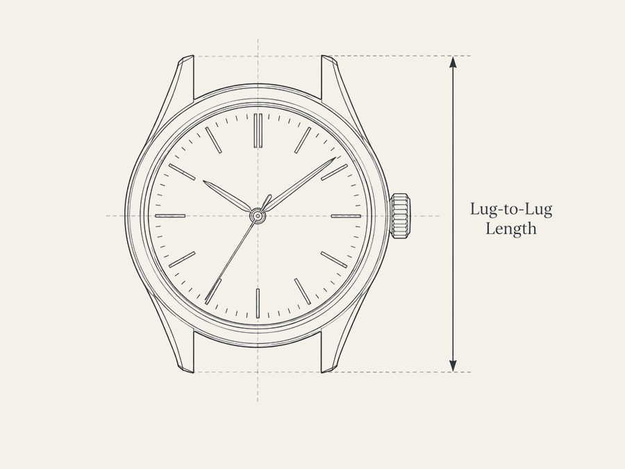

Most curation ignores wrist size entirely. Goldilugs is built around it — every piece chosen and measured for smaller and slender wrists, 39mm and under, with full case, movement and lug-to-lug specs disclosed up front.

Case diameter is one number. Lug-to-lug, lug width, and how a case actually sits on a 15–16.5cm wrist are what determine fit — and what most listings leave out entirely.
Movement, reference number, production year, service history where known, and honest condition notes — listed the way a specification sheet would, not the way a sales page would.
Goldilugs exists to make watches for smaller wrists easier to understand and find — the writing and research come first, the shop follows from it, not the other way around.
goldilugs is finishing NSW second-hand dealer registration before anything ships. Join the list and you'll hear about the first piece before it's listed anywhere else.